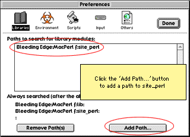

Building Mac
Mozilla
Note: These instructions are for building the now-obsolete CFM build with CodeWarrior. The build instructions for the current Mach-O build are here.
Table of Contents
- Building Mac Mozilla
- System Requirements
- Tools and resources
- Obtaining the source code and building it
- Debugging tips
- Setting environment variables
- More on using and customizing the build system
This page aims to be the complete source of information for people building Mozilla on the Macintosh. Please report deficiencies to sfraser@netscape.com. Please do not email me with questions about how to do stuff, or suggestions for improving the build process, or anything else that does not concern information on this page itself. Such questions should be posted to the newsgroup netscape.public.mozilla.mac
For developers who need to add files and projects to the Mac build system or change your build options, see the Mac build system page.
System Requirements
To build and run Mozilla, you'll need a beefy Mac with at least 1Gb of disk space, and 128Mb or more of memory. For serious development, we'd recommend a 300MHz 604 or G3 and 256Mb RAM. In particular, linking the layout.mcp project requires 80Mb free RAM, and in an optimized build, you will need around 100Mb of free RAM to build JavaScript.mcp, and Editor.mcp.
To run Mozilla, you must have MacOS 8.5 or later installed.
Tools and resources
Here is the list of software you have to have installed to build Mozilla on the Mac:
Note: For those internal to Netscape, there is a pre-prepared development environment on a local AppleShare server. Please contact a Mac guru for details.
|
CodeWarrior Pro 7. |
Start with a clean installation of Metrowerks CodeWarrior Pro 7. After finishing your CodeWarrior installation, change the memory allocation to the IDE to around 24Mb (Get Info in the Finder). Additionally, you'll find that debugging is substantially improved on Mac OS X if you update to Pro7.2. |
|
Replace the 3.4 headers that ship with Pro7 with the 3.4.1 headers from Apple. |
|
|
CodeWarrior
Plugin SDK |
We build a CW plugin, the xpidl compiler, as part of the build process, so you need the CodeWarrior Plugin SDK. Install the "(CodeWarrior Plugin SDK)" folder as a sibling of the Metrowerks CodeWarrior folder. Note that the first time you build Mozilla, you will probably get an error when building the first IDL project (xpcomIDL.mcp). If this happens, quit and restart the CodeWarrior IDE so that it picks up the xpidl project that was just built. Then restart the build. |
|
Menu Sharing allows other applications to add a menu to Mozilla's menu bar. Download, unstuff, and put the "Menu Sharing Toolkit 4.1" folder in CodeWarrior's "Mac OS Support" folder. |
|
|
ToolServer |
Sometimes, problems can occur when CodeWarrior attempts to start up ToolServer. If your build appears to halt when building the stubs target of NSStdLib.mcp, this could be the problem. Often, simply clicking on the desktop to deactivate the IDE causes ToolServer to fire up properly. If this still does not work, try moving ToolServer to your startup volume. If problems persist, check that you only have one copy of ToolServer installed on your machine. |
|
Download, decompress, and install. You can install this anywhere, but it is recommended that you install it next to your CodeWarrior folder for easy reference. After installation, set the memory partition size of the MacPerl application to around 18Mb (by doing a Get Info in the Finder). Important: Now make a folder called 'site_perl' in the same directory as the MacPerl application. Go to the 'Libraries' panel of the MacPerl preferences, and add this 'site_perl' folder as a library path, so that it gets searched before the others:  You may also want to set a preference to enable double-click launch of the perl scripts. This preference is set by selecting "Preferences..." from the Edit Menu. Click on the "Script" button and hit the radio button "Run Scripts opened from Finder". |
|
|
This is a set of tools by Chris Nandor, and makes installation of new modules easier. Download, and decompress. If you have more than one copy of MacPerl installed, run the copy of MacPerl that you want to install on. Important: Make sure you've added the
Now run 'INSTALL.plx' in the cpan-mac distribution that you just downloaded. It will install lots of files into the 'site_perl' folder. When it asks you if you want to install the droplets, click 'Yes'. You'll use one of these droplets to install the next two pieces. |
|
|
This is a Perl module that makes AppleEvent scripting easier. Download the file, but do not decompress it. To install, drag the downloaded file, 'Mac-AppleEvents-Simple-0.81.tgz', onto the 'installme.plx' droplet that was installed with the cpan-mac module. When asked if you want to 'Convert all text and MacBinary files?', click 'Yes' (do so for the following modules too). This will install files into the site_perl directory. |
|
|
This is a Perl module for launching applications. Download the file, but do not decompress it. To install, drag the downloaded file, 'Mac-Apps-Launch-1.70.tar.gz', onto the 'installme.plx' droplet that was installed with the cpan-mac module. This will install files into the site_perl directory. |
|
|
This Perl module is used for creating jar files on Mac. Download the file, but do not decompress it. To install, drag the downloaded file, 'Comprss-Zlib-1.12-bin-1-Mac.tgz', onto the 'installme.plx' droplet that was installed with the cpan-mac module. This will install files into the site_perl directory. |
|
|
This Perl module is used for creating jar files on Mac. Download the file, but do not decompress it. To install, drag the downloaded file, 'Archive-Zip-0.11.tar.gz', onto the 'installme.plx' droplet that was installed with the cpan-mac module. This will install files into the site_perl directory. |
|
|
If you want to do a static build, you'll also need to install these modules. Note that, for some reason, installing these modules takes lots of memory in MacPerl. You should allocate 24Mb of memory to MacPerl, and quit and restart it after installing each module. |
|
|
This Perl module provides regular expressions for XML
tokens, and is a requirement of |
|
|
This Perl module provides XML parsing functionality
(using Expat), and is used by |
|
|
This Perl module allows for DOM manipulations of XML-format CodeWarrior projects. Download the file, but do not decompress it. To install, drag the downloaded file, 'XML-DOM-1.31.tar.gz', onto the 'installme.plx' droplet that was installed with the cpan-mac module. This will install files into the site_perl directory. |
|
Obtaining the source code and building it
Using the MacCVS Pro client, create a new CVS session file, or download a ready-made session file here (all you need to set in this file is to enter 'anonymous' as the cvs password). If you are making a new session file, set your preferences from Edit -> Session Settings:
|
Checkout and Update Options |
|
|---|---|
|
Local Tree Directory |
Wherever you'd like the source code to be kept. A built tree currently uses about 508Mb of disk space. Ensure that the tree is on an HFS+ volume, otherwise the amount of space used will be much more. |
|
Merge Policy |
Auto Merge Text Files and Update Binary Files |
|
Default Module |
mozilla/build/mac/build_scripts |
|
Default Revision |
(LEAVE BLANK) |
|
Remote Host Information |
|
|
Server Hostname |
cvs-mirror.mozilla.org |
|
CVS User Name |
anonymous |
|
CVS Password |
anonymous |
|
CVS Root |
/cvsroot |
|
Network Time Out |
10 Minutes |
|
Encoding and File Mappings |
|
|
Add |
You may want to map the .pl extension to MacPerl, so that you can double-click on the build scripts from the Finder. Click Add and enter Suffix .pl, Type TEXT, Creator McPL Be sure to use Macintosh linefeeds! You may also wish to add mappings for MacPerl modules (.pm), JavaScript (.js), XUL (.xul), CSS (.css), DTD files (.dtd) and HTML (.html) to map them to your favorite editor (e.g. use R*ch for BBEdit). |
About Tinderbox
|
Tinderbox is your one-stop shop for build process information. Be aware that the tree (the source code repository) is changing hourly, and you'll find people checking in code day and night. You want to pull your source when the tree is good and building (when it shows green). The columns to look at are "Mac Debug Clbr", "Mac Opt Clbr", and "Mac Opt Depend". Here is what those mean:
|
Building Mac Mozilla the first time
Warning: You will be downloading tens of megabytes of source code. If you are using a modem connection, be prepared for hours and hours of download time. Be aware that a built tree takes about a gigabyte of hard disk space.
Before pulling the source code, always make sure the Macintosh build column on tinderbox is green. Redness on tinderbox presages a pull that will not build. If the Macintosh build is showing red, you might as well go to a movie and try later. You should add this tinderbox link to your bookmarks, even to your personal toolbar.
Now, to start the build process, there are some things you have to do only the first time:
- Check out the module mozilla/build/mac/build_scripts.
If you've followed the instructions above, you can just select the
menu
Action | Check Out Default Module. - Once CVS is done checking out the build directory, go to your
local tree directory and open it. Drill down to the
:mozilla:build:mac:build_scripts folder, and you should
see several build scripts waiting for you, namely
BuildMozilla.pl and BuildMozillaDebug.pl.
- Run either BuildMozilla.pl (for an optimized build)
or BuildMozillaDebug.pl (for a debug build) to start the
build process. Just drag that file onto MacPerl, or run it in
MacPerl whatever other way you prefer. Note that a debub build
will probably finish more reliably, due to the overly high memory
requirements of CodeWarrior during an optimized build.
The first time you run the build script, it will prompt you for the location of the CodeWarrior application (if not already running), and your MacCVS Pro session file, which you set up above. This file will be used to check out the rest of the tree. These two pieces of information are stored, and you won't be asked for them again.
Because various minor errors occur when checking out the tree (for example, there are some files with names that are too long for the Mac filesystem), MacPerl will probably report that the checkout failed. This error is benign; you can ignore it.
Once the checkout is complete, the script will continue and start the build process. It will build all the projects and create a Macintosh application directory in :mozilla:dist:viewer_debug: within your source tree. In that folder, you'll find a couple of applications: Mozilla, which is what will become the final browser, and viewer, which is a small app that is used for testing the layout engine.
For more details on how to control the build, see the Mac build system page.
Help! My build failed! Why?
Common reasons for build failure:
- MacPerl fails to run any of the scripts
This is probably because the perl scripts were checked out with Unix linebreaks. Go into the MacCVS Pro session settings, and make sure that .pl and .pm files are using Macintosh linebreaks. Then trash mozilla/build/mac, and pull the scripts again.
- I get errors from MacPerl when I try to run the
scripts!
This is probably because there is something wrong with your installation of MacPerl, or the additions that are required. Ensure that you followed the installation instructions above, especially the part about adding "site_perl" to your MacPerl folder path preferences.
- When the scripts pull a tree, MacPerl tells me that the
checkout failed!
This is actually normal, or at least fairly common. There are files in the tree with names that are too long for the Mac filesystem (luckily, none that Mac needs!), and these and other minor CVS errors can confuse the checkout process.
If you have changes in your tree, and you get CVS conflicts when updating, then you'll certainly see checkout errors. In that case, look at the messages window in MacCVS for conflict warnings, and deal with the conflicts.
- This is my first time building, and my build fails at
XPCOMIDL.mcp with a message about xpidl not being found
We build the xpidl plugins as part of the build, but the IDE does not pick these up without quitting and restarting. We tried to script this quit and restart, but it made MacPerl unhappy. So the first time you build, you'll have to quit and restart the IDE by hand, then restart the build.
- When the build gets to NSStdLib.mcp, it stalls.
What's happening here is that we're building the Stubs target of NSStdLib.mcp, which uses the RunTSScript CodeWarrior plugin to fire up ToolServer, which builds a stubs library (using the MakeStub tool) from the .exp file of that project. (Got it?) So a number of things can go wrong here:
- You didn't copy the 'RunTSScript' CW tool from mozilla:build:mac to your CodeWarrior Plugins folder.
- ToolServer is not happy. Make sure that you can run it standalone (or via CodeWarrior's ToolServer menu), and that you don't have multiple copies on your machine. Also ensure that you are running the right version for your OS (you should have ToolServer 3.5 for Mac OS 9).
- You're suffering from some weirdness with events, that causes things to stall until you switch the IDE to the background. Often just clicking around will get things moving again.
- The build halts because some code does not compile! How the
heck can this ever work?
You probably updated your tree at a bad time. Don't forget to check Tinderbox before you update!
- layout.mcp fails to link, with some random error.
You probably don't have enough free memory available. Quit other programs, and try again.
- JavaScript.mcp or Editor.mcp fails to compile, with an
out of memory error.
Building some of the files in these projects in optimized mode takes huge amounts of memory; we seem to hit some pathological case in the CW optimizer. You can either try to free up enough memory (on a 128Mb machine, restart the machine, load CodeWarrior and nothing else, and you should be able to just about build the project). Allocating more RAM to CodeWarrior will not help (it uses temporary memory). Alternatively, you can modify your build prefs to use a lower optimization level in the optimized build.
OK, so my build finished. What now?
Congratulations!
Now, to run the Mozilla browser, look in mozilla:dist:viewer_debug (or just :viewer if you built optimized). You should find the app, 'MozillaDebug', and a .xSYM file. To run, or start debugging, run this app or load the .xSYM file in CodeWarrior.
You'll also notice that this app is only around 200K in size. That's because most of the code lives in shared libraries, which go into the Essential Files folder (these are libs that are loaded automatically by CFM), and the Components folder (these libs are XPCOM modules, and are loaded by the app at runtime). So when you are debugging, you'll have to grovel around in these folders for the appropriate .xSYM files.
Debugging tips
So you've hit an assertion, or found a crash. How to debug it? It's often easiest to run Mozilla without the debugger first, so you drop into MacsBug on an assertion or crash. You can then get a stack, and log this to a file (log my_crash,sc,log).
If you're in the Metrowerks debugger and halt for some reason, it can be a little harder to find out where you are. The debugger should show fragment names in the stack pain (try using the older, stand alone debugger MWDebug 1.7.4, which is a little better at debugging across shared libraries). Locate the .xSYM file that corresponds to the fragment name, and load it.
Another problem that we often run into is that the MW debugger
can't show the contents of interface pointers (nsIFoo),
which has been submitted as a bug to Metrowerks. To work around this,
you'll have to step into some code that uses the concrete class
behind the interface; it may be necessary to add a dummy call to the
code to be able to do this.
Setting environment variables
Classic Mac OS has no concept of environment variables, but there are several developer features in Mozilla that relies on environment variables, so we have a couple of ways to set these up for Mozilla.
Startup file
If you do a Mozilla bulid, you'll have a file called 'NSPR Logging' in the same directory as the application. It contains some lines like:
ENV:NSPR_LOG_MODULES=nsComponentManager:5 ENV:NSPR_LOG_FILE=xpcom.log
If you start Mozilla by dragging this file onto it, Mozilla will pick up those environment variables. You can edit this file, or make another file; just edit the 'ENV' lines. This technique is useful if you want Mozilla to use those environment variables only for some runs where you need them.
ENVIRONMENT file
If you make a file called 'ENVIRONMENT' (case does not matter) and put it in the same folder as Mozilla, Mozilla will look in this file when it runs, and pick up environment variables within it. The file contents should look like:
NSPR_LOG_MODULES=nsComponentManager:5 NSPR_LOG_FILE=xpcom.log
More information
For more information about the Mac build system, see the Mac build system page. If you are interested in contributing, and need information, please post on the netscape.public.mozilla.mac newsgroup.
Simon Fraser